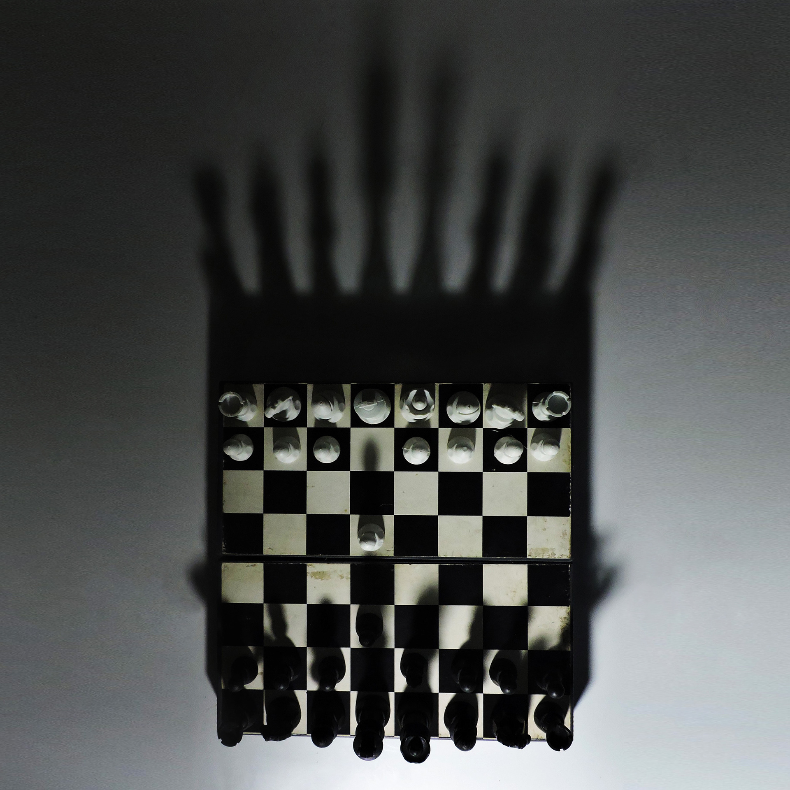

Projeto Fotográfico
O projeto foi desenvolvido para a matéria Fotografia 2, do curso de Design gráfico da Unesp Bauru. As fotografias deveriam trabalhar composição, foco e luz. O projeto foi realizado individualmente, e as fotografias foram editadas no Adobe Photoshop.

As fotos foram feitas durante a pandemia, em 2022, e por isso foram tiradas em casa. A falta de espaço e de objetos para serem fotografados resultaram na decisão de trabalhar com perspectiva e distância focal em pequena escala.